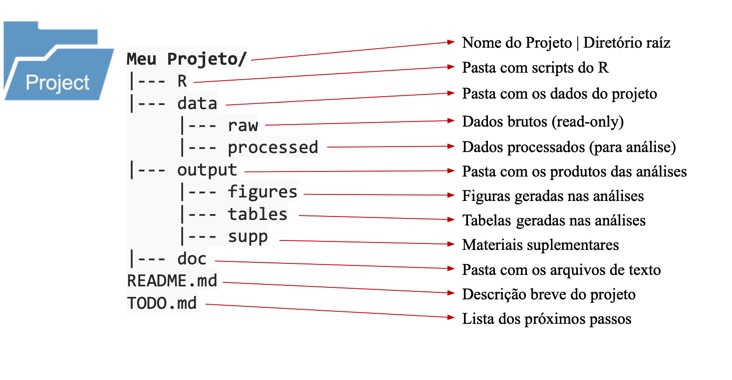
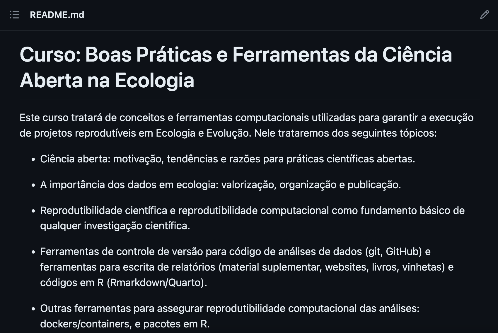
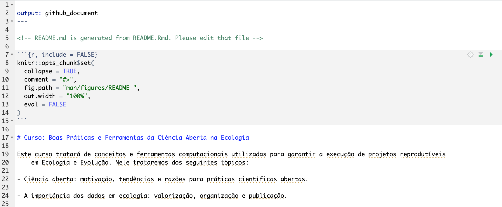
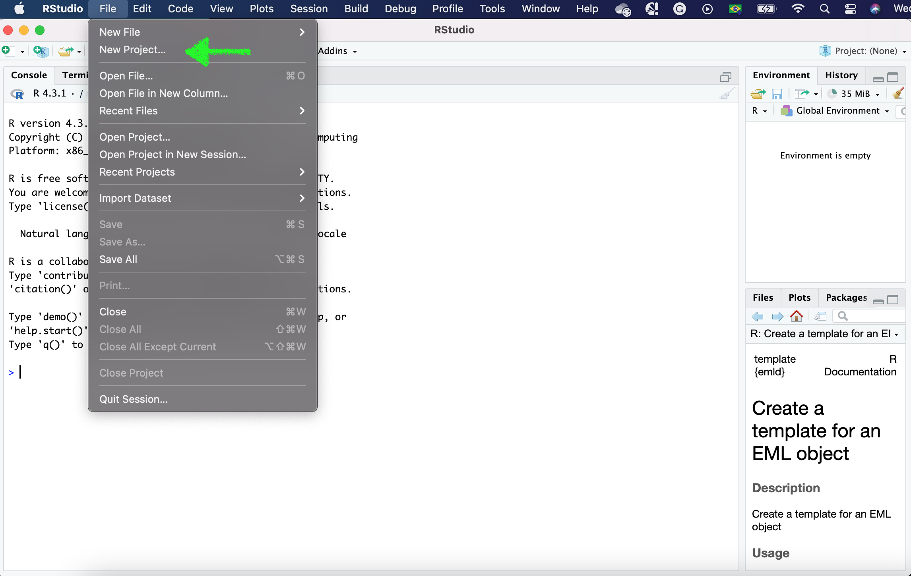
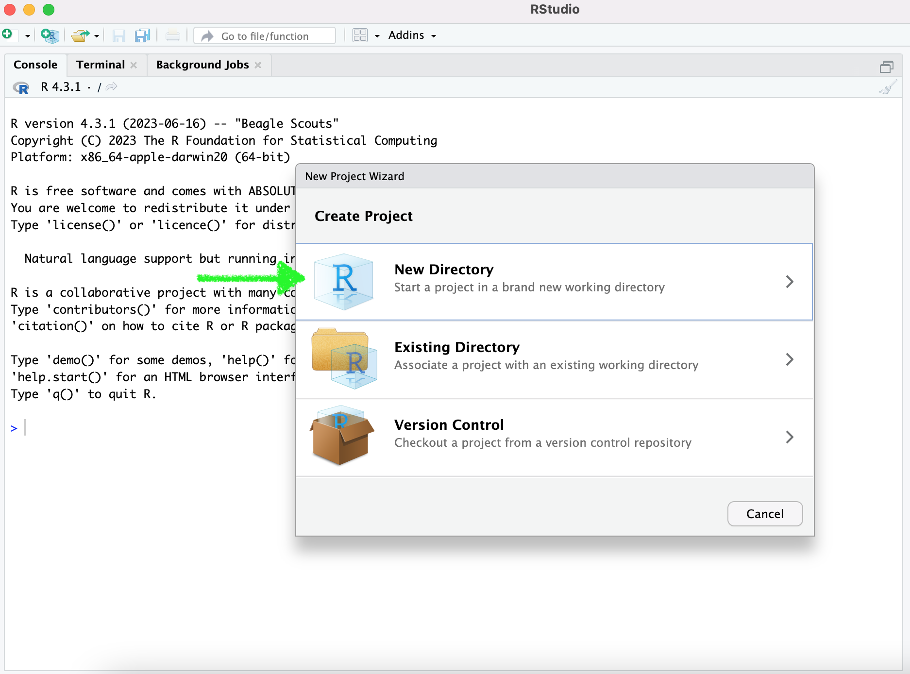
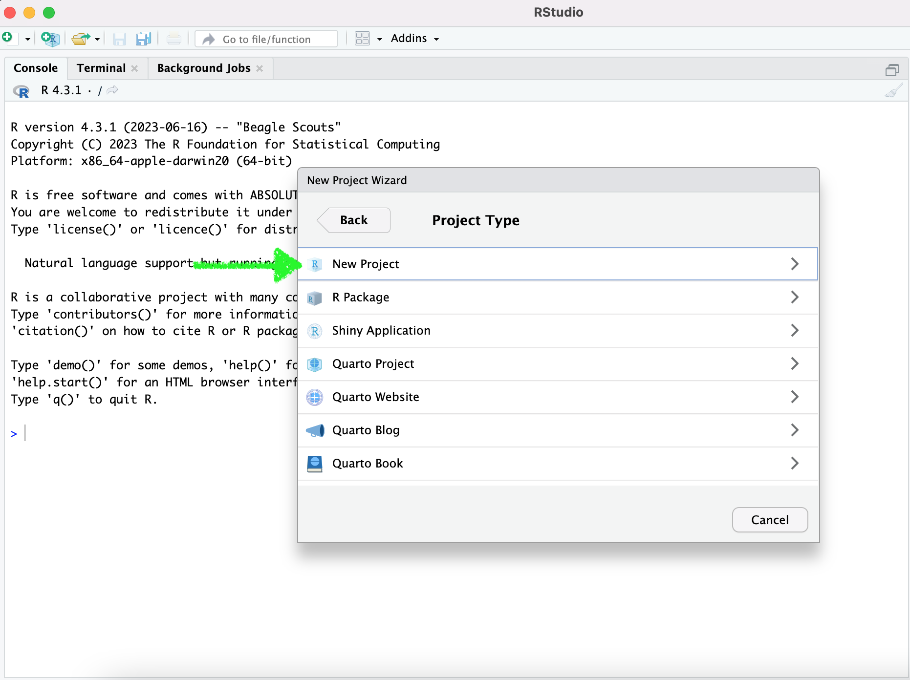
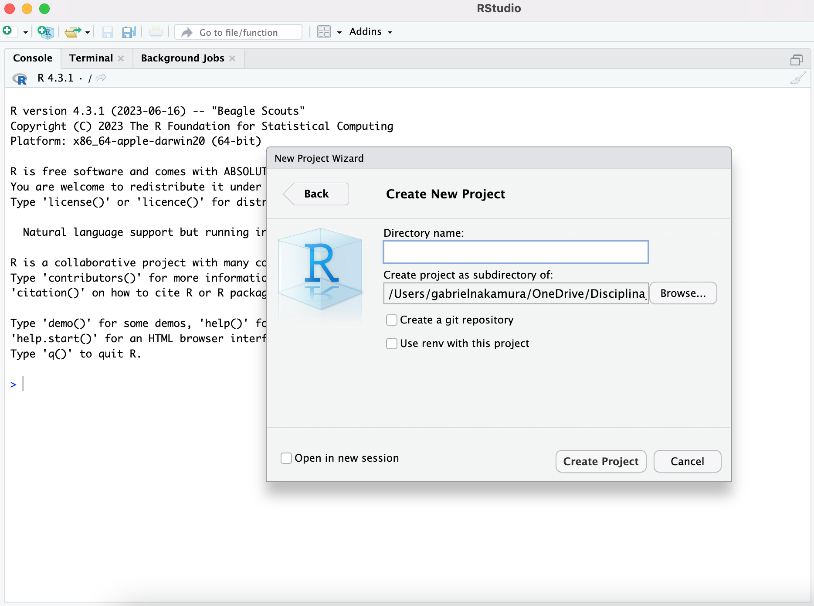

Conhecendo sua máquina
Organização local, caminhos e arquivos
Organização - questão de estilo?
“Eu me acho na minha bagunça”, quem já ouviu essa frase, ou já pronunciou? Provavelmente todos nós. Mas o conceito de organização seria mesmo uma questão pessoal? Podemos discutir isso durante horas a fio se estivermos falando do seu quarto, da sua estante ou do seu guarda-roupa, mas quando falamos de ciência, ou seja, uma atividade coletiva, organização não é uma questão pessoal, justamente por ser coletiva. Sempre trabalhamos em conjunto, e isso pode ser com um grupo composto por muitas pessoas que trabalham em um determinado projeto, ou pode ser consigo mesmo, o seu eu do futuro. Desta maneira, é necessário que tudo que foi utilizado para o desenvolvimento do seu projeto científico seja de fácil compreensão para seus colaboradores ou para o seu “eu” do futuro.
Dados necessários para as práticas
Nesta seção vamos utilizar os dados do pacote {palmerpenguins}. Que apesar de estar disponível como pacote, portanto poderia ser lido automáticamente apenas baixando o pacote, vamos importar os dados a partir do nosso computador. Vamos fazer isso pois assim podemos demonstrar boas práticas na leitura de dados, scripts e organização do nosso repositório local de maneira geral. Os dados do pacote já estão no repositório que baixaram. Mais adiante vamos utilizá-lo, mas antes vamos ver esquemas gerais de organização de repositório local
Um esquema geral (mas não absoluto) para organização do diretório local
Nessa seção irei mostrar uma proposta de esquema geral para organização de diretórios. Essa estrutura é baseada nesta proposta do Gustavo Paterno.
Digo que não é absoluto pois modificações nesse esquema podem ser feita para ajustar ao conjunto de dados de cada pessoa. A Ecologia é um campo muito amplo de pesquisa, e nem todos os dados se ajustarão perfeitamente a esta proposta. O mais importante de tudo é que os dados estejam organizados de uma maneira intuitiva (lida por máquinas, humanos e ordenado) e consistente no diretório, como o da figura seguinte.
Mas, qual a lógica por trás da organização desse diretório? Nesta proposta os arquivos dentro de um projeto são organizados em 4 pastas que contemplam quase todos os documentos que geramos ou que precisamos quando estamos desenvolvendo um projeto científico:
R: pasta contendo scripts e funções para análises. Aqui descrevemos como R pois grande parte deste material é pensado em usuários deste programa, mas essa pasta poderia ser de outro software de análises.data: pasta contendo os dados necessários para as análises. Aqui vale a pena a divisão em duas outras pastas: -raw: dados brutos, apenas para leitura (read-only), mas não serão realizadas modificações nestes dados. Isso garante que seu dado bruto sempre se mantenha preservado. -processed: dados processados a partir de scripts e do dado bruto contido emrawoutput: pasta contendo o resultado de análises, podendo ser figuras, tabelas arquivos do tipo .rds (para guardar objetos vindos do R), entre outros.docs: pasta contendo arquivos de texto, preferencialmente arquivos dinâmicos como rmarkdown ou quarto, que podem ser versionados de maneira muito mais eficientes que arquivos de outros softwares.README: arquivo de descrição detalhada sobre a estrutura, o conteúdo e a forma de uso do repositório/diretório.gitignore: arquivo especial, apesar de não estar presente na ilustração vamos ver que seu uso é bem importante no versionamento
Vale destacar mais uma vez que esse esquema se trata apenas de um modelo geral que pode ser adaptada para que se adeque bem a diferentes projetos, principalmente projetos de pesquisa.
O README
O README é uma das partes mais importantes do seu diretório, ele é escrito em caixa alta justamente para que a pessoa que esteja acesssando o seu diretório ouça em voz alta Me leia, por favor!!.
Neste arquivo de texto você irá encontrar as principais instruções sobre a estrutura do diretório, incluindo os nomes das pessoas que montaram o diretório, além de instruções básicas sobre o que contém em cada pasta. Aqui você pode encontrar dicas de como o README contendo as informações básicas necessárias que ele deve conter e porque. Aqui um template que pode ser adaptado para os seus propósitos. Aqui algumas dicas interessantes em português. Por fim nesse repositório você pode encontrar alguns exemplos interessantes de arquivos README para diferentes tipos de projetos
É importante saber que você não irá encontrar o modelo final para o README perfeito. Os detalhes de cada README vão variar dependendo do projeto que está desenvolvendo e a forma como ele deve ser apresentado ao usuário. Por exemplo, se o projeto se trata de um repositório de arquivos e scripts de um manuscrito, e não de um README de um projeto de software, não precisa haver alguns campos de explicação, tais como exemplo de uso ou antigas versões de lançamento. Aqui coloco um checklist adaptado de itens que julgo essenciais para um README informativo. Pense no seu trabalho, adicione ou edite esse checklist de acordo com seus propósitos.
Minha proposta de checklist:
Iniciando o README
Duas opções para montar o arquivo README. Primeira, montar você mesmo. O arquivo pode ser montado em um bloco de notas e deve ser nomeado como README.md. A extensão .md é importante aqui, ela significa que é um arquivo do tipo Markdown. Neste momento é importante saber que o arquivo Markdown é apenas um arquivo de texto simples de um tipo chamado linguagem de marcação (markup language), que permite especificar a estrutura e a formatação da estrutura de um documento a partir do uso de tags e outros códigos. Vamos abordar em detalhes como elaborar documentos em Markdown, como este que você lê neste momento, mais adiante. Por hora é importante saber que o README deve ser em markdown pois assim o GitHub idenfica corretamente este documento como sendo o arquivo a ser exibido na página inicial do repositório remoto, como ilustrado na figura abaixo.

Na realidade, o arquivo fonte tem essa aparência

Mostro como podemos montar um README Section 3.1. Por enquanto vamos fazer o mais simples.
1- Abra um editor de texto (recomendo o Obsidian, mas o editor nativo do seu computador funciona bem também).
2- Digite qualquer título na primeira linha que se inicie com # Meu Título.
3- Salve o arquivo com o nome de README.md em algum local do seu computador. Por enquanto é isso.
Na seção Documentos dinâmicos veremos como fazer um README a partir de um documento quarto, que é muito mais versátil.
Ferramentas para organização do diretório local
Iniciando um projeto com o RStudio
Como vimos na aula teórica Section 5, o RStudio possibilita enraizar o projeto, desta forma não precisamos utilizar caminhos absolutos, tornando nossa vida mais fácil e o trabalho mais reprodutível para quem tentar utilizar nosso repositório. Portanto, o primeiro passo vai ser iniciar um novo projeto com o RStudio. Para isso faça o seguinte:
1- Abra o RStudio
2- Em Arquivo, selecione Novo Projeto, como mostrado abaixo

3- Na janela que se abriu selecione Novo Diretório para iniciar o projeto em um diretório novo

4- Escolha o tipo de projeto, neste caso novo projeto (se apenas um projeto, ou um pacote ou um aplicativo shiny)

5- Por fim escolha o nome para o diretório e onde ele vai estar no seu computador

Pronto, uma nova janela do RStudio se abrirá, indicando que seu projeto foi iniciado com sucesso. A partir de agora, para abrir o R e realizar modificações de scripts basta clicar no arquivo .RProject que leva o nome que deu ao diretório.
Pacotes para inicialização automática (alternativa)
Alguns pacotes auxiliam montar automaticamente a organização do seu diretório local, por exemplo essa ferramenta elaborado pelo Carl Boettiger e essa do Francisco Rodriguez-Sanchez.
Vamos explorar um pouco a funcionalidade do pacote {template}. Para tanto precisamos primeiro instalar o pacote que está hospedado no GitHub.
# install.packages("remotes")
remotes::install_github("Pakillo/template")Em seguida vamos ler o pacote e iniciar um novo projeto
library("template")
new_project(name = "treegrowth", path = "caminho/para/diretório")O diretório será iniciado no local indicado pelo argumento path na função new_project.
Note
Apesar da facilidade que essas ferramentas para inicialização automática dos repositório nos oferecem, minha sugestão é que você organize manualmente seu diretório, pelo menos no início, para pensar cuidadosamente na estrutura das pastas que serão necessárias.
Here
O {here} é o melhor pacote para padronizar caminhos. Sabe aquele erro de leitura dos dados por conta de um / ou \, ou por ter esquecido ou errado na digitação daquele caminho gigantesco para o arquivo desejado? Com o {here} nada disso vai acontecer.
Para demonstrar o uso do pacote here vamos ler os dados palmer-penguins.txt para o R. Lembrando, abra o R a partir do .Rproject dentro do diretório que iniciamos nos passos anteriores
# caso não tenha o here instalado ainda
# install.packages("here")
library(here)Da maneira convencional poderíamos ler esse dado da seguinte forma:
data_penguins <- read.csv("/Users/gabrielnakamura/OneDrive/Disciplina_Praticas_ferramentas_gestao_dados/USP_reproducibility_BIE5791/data/data-penguins.csv")Será que você consegue reproduzir essa simples leitura de dados usando o mesmo código acima? Tente..
Após a tentativa fica claro que não é possível realizar essa leitura de dados. Mas vamos lembrar que temos o projeto que enraiza nossa pasta, então podemos apenas usar o seguinte código
data_penguins <- read.csv("aulas/organizacao_local_caminhos/dados-exemplo/data-penguins.csv")Funcionou? Ou apenas para alguns?
Imagino que pode ter funcionado para todos que tem o computador onde a máquina reconhece / como separador de caminhos, porém, aqueles que precisa de \ para informar a separação dos caminhos não deve ter tido sucesso. Como resolvemos isso?
Aí entra o here. Com o pacote here podemos usar simplesmente o seguinte código
library(here)
data_penguins <-
read.csv(here::here("aulas",
"organizacao_local_caminhos",
"dados-exemplo",
"data-penguins.csv")
)
data_penguinsNote que ao invés de usarmos o caminho, usamos dentro da função here o nome das pastas que levam até o arquivo que desejamos abrir, bem como o nome deste arquivo. Garanto que agora isso irá funcionar com todos
Slides da aula
Aqui você encontra os slides apresentados em aula sobre esse tópico